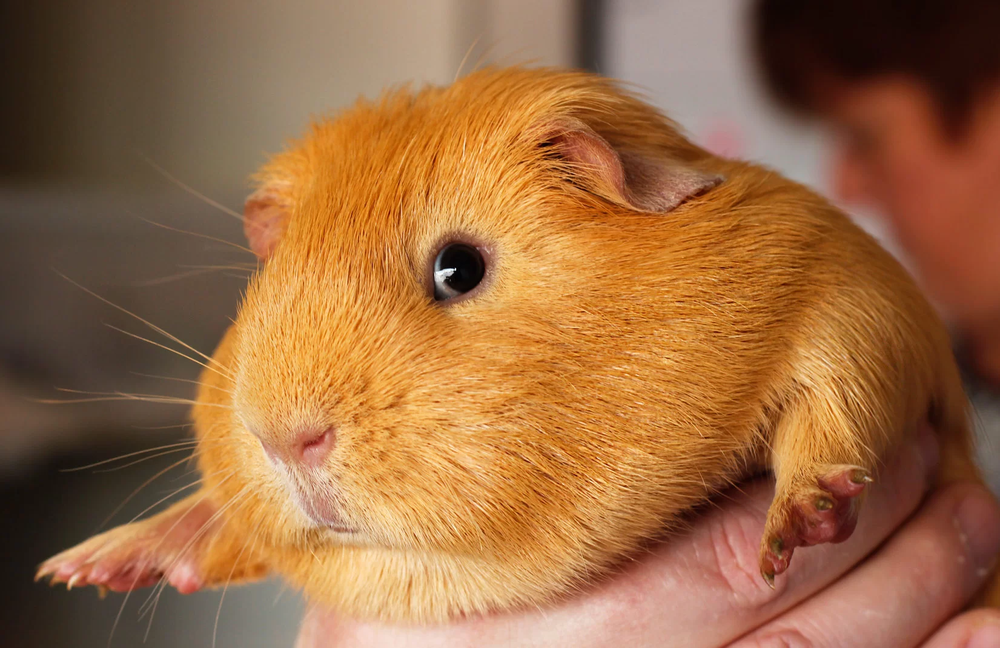
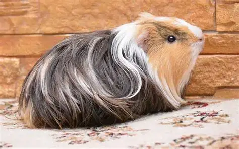
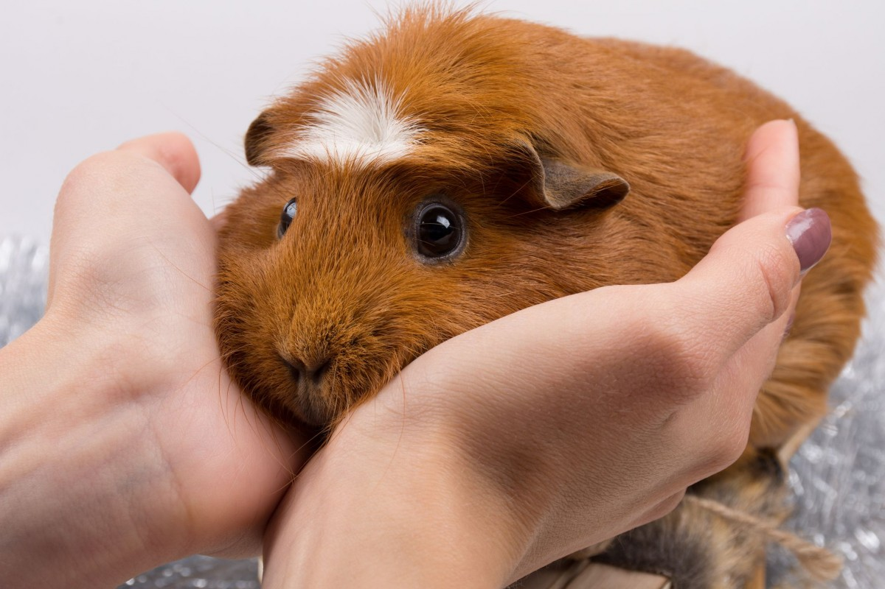
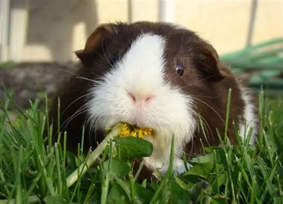
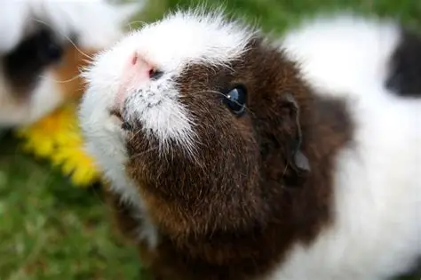
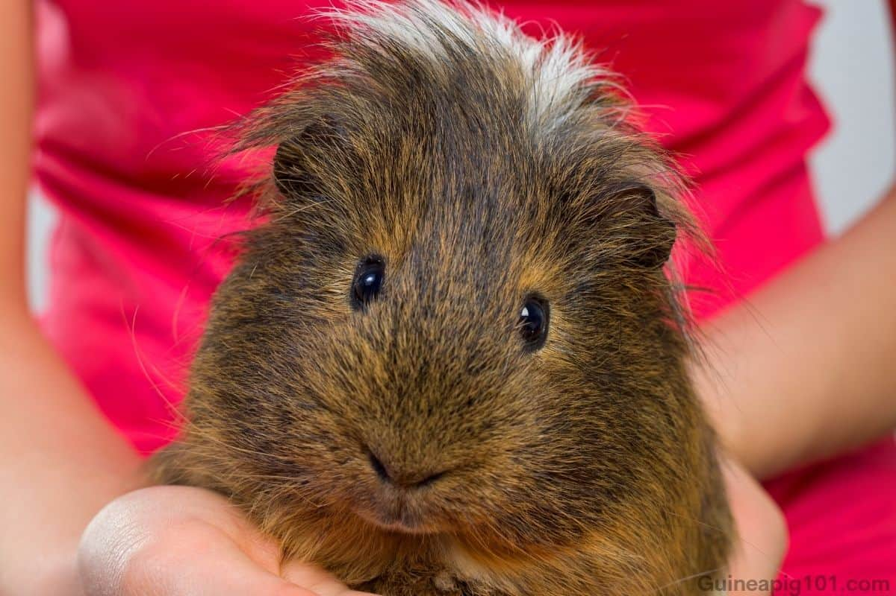

Nuestras cobayas
Te presentamos a algunas de nuestras cobayas estrellas que forman parte de nuestro equipo, su edad y la función que cumplen en nuestras terapias:

LUCY:
es una cobaya dulce y curiosa de dos años, de pelaje suave y brillante, con una personalidad tranquila y cercana. Desde pequeña ha mostrado un carácter amigable y paciente, lo que la hace perfecta para interactuar con los niños. En las terapias, Lucy cumple una función muy especial: ayuda a los niños a desarrollar habilidades emocionales y sociales. Su presencia calma la ansiedad y les enseña a cuidar y respetar a otro ser vivo. Al acariciarla y jugar con ella, los niños mejoran su autoestima, concentración y capacidad de expresión emocional. Lucy se convierte así en una pequeña guía afectiva, transmitiendo seguridad y cariño en cada sesión. Su interacción no solo es divertida, sino también educativa: fomenta la empatía, la responsabilidad y la conexión con la naturaleza, haciendo que los niños aprendan a través del juego y la ternura que ella ofrece.

MILO:
es una cobaya de tres años, de pelaje suave y cuidado, con un carácter sereno y atento. Su temperamento calmado y amistoso lo hace ideal para interactuar con adultos mayores, ofreciéndoles compañía y momentos de tranquilidad. En las sesiones de terapia, Milo cumple una función emocional muy importante: ayuda a reducir la ansiedad, el estrés y la sensación de soledad. Su presencia invita a la interacción, fomentando la comunicación y el contacto afectivo. Al acariciarlo y observar su comportamiento, los adultos mayores experimentan momentos de alegría y bienestar, mejorando su estado de ánimo y promoviendo recuerdos positivos. Milo no solo aporta cariño, sino que también estimula la paciencia, la memoria y la conexión emocional, convirtiéndose en un pequeño compañero que acompaña y motiva a quienes participan en las terapias.

BELLA:
es una cobaya joven de un año y llena de energía. Su carácter juguetón y curioso la hace muy querida por los niños, quienes se sienten atraídos por su simpatía y ternura. En las terapias, Bella cumple un papel muy especial: ayuda a los niños a desarrollar habilidades sociales y emocionales a través del juego y la interacción. Su presencia fomenta la confianza, la comunicación y la empatía, al acariciarla, observarla y jugar con ella. Bella contribuye a reducir la ansiedad, mejora la concentración y estimula la creatividad, convirtiéndose en un apoyo afectivo que transmite calma y alegría en cada sesión.

COCO:
es una cobaya de cuatro años, de pelaje suave y cuidado, con un carácter tranquilo y muy afectuoso. Su personalidad calmada lo hace ideal para acompañar a los adultos mayores, brindándoles compañía y momentos de serenidad. Su presencia estimula la comunicación, la memoria y la conexión emocional. Coco se convierte así en un compañero confiable y reconfortante en cada sesión.

NALA:
es una cobaya de dos años, de pelaje suave y brillante, con un carácter alegre y muy sociable. Su simpatía y ternura la hacen muy querida por los niños, quienes disfrutan interactuando con ella en las sesiones de terapia. Nala cumple un papel importante: ayuda a los niños a desarrollar habilidades emocionales y sociales, fomentando la empatía y la comunicación. Su presencia calma la ansiedad y el estrés, mientras enseña a los pequeños a cuidar y respetar a otro ser vivo.

MAX:
es una cobaya de tres años, con un carácter tranquilo y muy afectuoso. Su personalidad calmada lo hace ideal para acompañar a los adultos mayores, brindándoles compañía y momentos de tranquilidad. Max cumple una función emocional muy importante: ayuda a reducir la ansiedad, el estrés y la sensación de soledad. Su presencia invita a la interacción, fomentando la comunicación y ofreciendo un vínculo afectivo que aporta seguridad y bienestar. Max se convierte así en un pequeño compañero que acompaña y motiva a los participantes durante cada sesión de terapia.